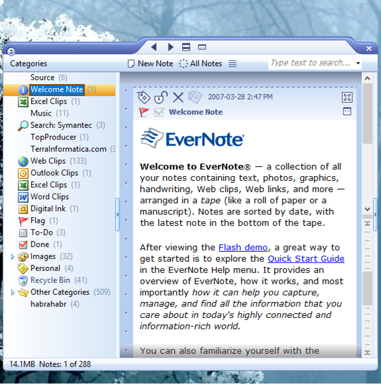

«Беседы про Sciter при луне»: интервью с Андреем Федонюком, создателем HTML-движка с 400 млн. пользователей
Справка
Sciter (ранее HTMLayout) — встраиваемый HTML-движок, ориентированный на создание десктопных приложений с пользовательским интерфейсом, написанном на HTML. Он используется десятками крупнейших софтверных компаний, среди которых: ADGUARD, TeamViewer, Broadcom, vmWare, Samsung, ESET, Comodo, Evernote и многие другие.
Интервью было взято у его создателя Андрея Федонюка в ноябре 2020 г. Текст приводится с незначительными сокращениями.
Привет, Андрей! Ну, давай, наверно, с самого вкусного начнём? Я правильно помню, что Sciter сейчас работает на каждом двадцатом компьютере в мире? Ничего не перепутал?
Я не считал, сколько их там в мире. У меня статистика есть от четырёх антивирусных компаний. Самая надёжная, которой я точно доверяю — это Symantec. Они говорят, что у них сейчас, ну, или на пике было, сто с чем-то… сто двадцать семь миллионов инсталляций, по-моему.
Это в общем по симантековским продуктам? По Norton Antivirus и остальным?
Ну да. Такая вот аппроксимация, плюс инсталляций остальных клиентов в сумме набирается ещё где-то 260-270 миллионов суммарно. Абсолютно реальные цифры.

Ясно. Ну, теперь, когда видно, что человек ты большого масштаба…
Да нет тут никакого особого масштаба, нормальный человек! Обычный девелопер.
…давай поговорим о тебе. Ты, насколько я знаю, живёшь в Канаде, а родился в СССР, правильно?
Да.
А где учился?
Днепропетровский физтех. Это был Днепропетровский государственный университет, в Советском союзе ещё. Физтехов в Советском союзе было 6 штук. Собственно, Московский физтех тоже вырос из Московского университета, а где-то они остались при университетах как факультеты. Специальность у меня — «Системы управления баллистическими ракетами».
То есть, ты ковал оборонный щит родины?
Да, у меня вон и погоны лежат в тумбочке, лейтенант запаса ракетных войск стратегического назначения СССР.
Почти коллеги, я тоже был приписан к ракетным войскам. Правда, не служил.
Я тоже не служил. Военную кафедру закончил.
А когда ты выпустился, где работал, если не секрет?
Это был 1986 год… В Подмосковье поработал по специальности 2 года после выпуска. В оборонке.
Это что-то засекреченное было?
Да нет, просто не слишком интересное место. Один из оборонных институтов. Не знаю, будет ли кому-то интересно… Как-то сидели на ВЦ с коллегой, что-то обсуждали. Это ещё было на ЕСовских машинах. Я спрашиваю: «Что ты за задачу-то считаешь, что она так сильно нагружает процессор?» Он отвечает что-то типа: «Оптимальный вход головной части ракеты в атмосферу», то есть, у него цифровой выход задачи — количество людей, которые погибнут при этом. Такие цифры, абстрактные. Я как-то вот так сразу задумался: ну ладно, для него это цифИрь голая, ну, все мы не отдаём себе отчёт иногда чем занимаемся, но я-то, блин, что здесь делаю? Как-то мне шибко нехорошо стало. То есть, всё это как-то… неправильно.
То есть, ушёл ты по соображениям морального характера?
На самом деле там много чего наложилось. Закат СССР уже был. Ну и вот это, последней каплей стало. Бомбануло у меня и я ушёл в медицину.
А какого порядка цифры были, которые оптимизировал товарищ? Меня аж заинтриговало!
Да неважно, какие цифры абсолютные, важно, что он их максимизировал. Я когда оказался в Канаде уже, в 1999-м, фирма, которая меня пригласила сюда, провела одно из первых мероприятий. Мы поехали в Нью-Йорк, на какую-то майкрософтовскую конференцию, и одна из экскурсий была на эти две башни знаменитые, которые потом разбомбили. Я помню, первая мысль была, когда я оказался наверху, на смотровой площадке одной из башен, и посмотрел на огни Нью-Йорка, уходящие вдаль — вспомнился этот чувак, который считал максимальное поражение. Понятное дело, что если бы плюхнулась туда ракета, всем бы было очень-очень грустно.
Слушай, а как вообще там в Канаде живётся?
На самом деле Канада ничем не отличается от современной России. Несколько скучноватая страна. Здесь, знаешь, такой социализм, я б сказал, северного типа. Как в Норвегии. Сейчас в Канаде социализма, больше, чем было в СССР, когда я оттуда уезжал, это стопудово.
А в чём это проявляется?
Да во всём. Медицина бесплатная, образование бесплатное. Нет, высшее платное, но плата символическая, платит в основном государство. Капитализм с социалистическим лицом. В Канаде политический строй нацелен на обслуживание среднего класса. Канада и есть средний класс. И когда у тебя есть общество, состоящее, в основном, из представителей среднего класса, оно очень стабильно. Средний класс ничего не хочет менять, он такой… консервативный. Поэтому динамики сейчас гораздо больше в России.
Возвращаться не планируешь?
А что мне возвращаться, я живу там и там.
А, на два дома, то есть?
Да. У меня мама там живёт, я часто приезжаю. Куча друзей там, родственники. Здесь-то родственников нет, кроме жены и сына. Нет, ну, конечно, у многих россиян, особенно с украинскими корнями, если поискать, найдутся родственники в Канаде, многие приехали сюда ещё до революции.
А, кстати, у тебя в папке Media в Sciter SDK, фотографии природы довольно красивые — это ты сам фотографировал, в Канаде?
Да. Я просто чужие фотографии и права не имею класть.

Логично. Так это именно канадская природа там запечатлена?
Где-то канадская, где-то Карибы. Я много где ездил, на самом деле, и по Канаде именно, наверно, не так уж часто. Просто я живу в 40 минутах езды от Штатов — в итоге, я в каждом из штатов побывал. И по бизнесу, в основном, туда езжу. Получается, живу в социализме, работаю в капитализме, удобно.
Раз заговорили про работу при капитализме — давай плавненько к этой теме перейдём. Я правильно понимаю, что первый твой проект, расчитаный на широкую публику, был HTML Notepad?
Да, только он назывался Blocknote.net в то время.
Точно!
Какой это был год? 2002-й, кажется. Началось с того, что ко мне пристала жена с вопросом, как ей картинки положить, я, мол, веб-сайт делаю, хочу подружкам показать. Она человек, в принципе, технический, но совершенно не программный. Я так посмотрел, и на тот момент оказалось, что для… как это говорится по-английски… the rest of us, то есть, для простых людей, для домохозяек, нет никаких средств, чтобы написать текст, вставить картинку, потом нажать кнопку и сказать: «Вот, пожалуйста, смотрите все». То есть, условно говоря, запаблишить веб-сайт. И я, буквально на коленке, сделал ей WYSIWYG-редактор для HTML.
Это был мой первый опыт HTML-рендеринга, скажем так. После того, как я сделал этот редактор, я его выложил на сайт, сделал shareware. Потом… я уже не помню в деталях, помню, что где-то через год ко мне обратился Степан Пачиков. Это основатель Evernote.
Не только. Он же ещё и ParaGraph основал?
Да-да, их два брата, один в Москве, один на два побережья живёт, в Нью-Йорке и в Калифорнии. Они на меня вышли, и мы начали с ними работать. Им нужно было для Evernote редактор HTML notes, и, собственно, рендеринг. И у этих notes внутри, естественно, HTML. Evernote изначально был на базе WTL, такое кондовое, классическое Windows-приложение, Эдик Талныкин и Пётр Квитек его писали. Я сделал для них редактор, и когда над ним работал, подумал, а почему бы, помимо редактора, весь user interface в HTML не запихать? Собственно, вот тогда и возникла идея того, что стало позже HTMLayout. Он был безо всякого скриптового языка, голый HTML и Cascade Style Sheets. Это был, как понятно из названия, чистый HTML layout-компонент, для того, чтобы рисовать UI.
Вот это решение, если сейчас посмотреть в прошлое, оно же ключевое было, получается? А как оно вообще пришло тебе в голову? Возьмём FrontPage тот же. Это же тоже был WYSIWYG-редактор для HTML, и интерфейс у него, насколько я знаю, как раз WTL'ный, или MFC'шный. Зачем было делать интерфейс средствами того же движка? Такой экстремальный dog fooding.
Если ты посмотришь сюда: https://notes.sciter.com/2017/09/11/motivation-and-a-bit-of-history/, ты увидишь скриншот изначального Evernote'а, интерфейс, который модным был в своё время. Видишь, он такой… Красивый, так скажем. И он явно попадал не в категорию desktop-приложений, а в категорию… Которую мы сейчас называем «HTML-приложения». То есть, с богатой графикой. Хотя это WTL-приложение, но вот там, где «EverNote» написано, там работал HTML-editor от Blocknote.net, прототип будущего Sciter'а. Ну и, собственно, когда я смотрел на user interface такого типа, подумал, что его удобнее было бы рисовать в HTML. Понимаешь, вот в этом, конкретном приложении, интерфейс был прибит гвоздями. Какая-то статическая картинка, которая как-то, кодом, растягивалась.
Без layout'а?
Да, без layout'а, руками в коде писалось всё. HTML удобнее же для этих целей. Таблицу написал и всё растягивается волшебным образом на весь экран. В общем, сразу возникает мысль: «Почему бы не использовать HTML как layout-средство для UI десктопного приложения?» Вот, собственно, оттуда всё и пошло.
Evernote был твоим первым по-настоящему крупным клиентом? В какой момент ты понял, что HTMLayout «выстрелил», что он пользуется спросом?
Ну, в Evernote мой код работал, всё-таки, как редактор. А первый клиент большой… Уже после того, как я закончил с Evernote, я сразу сделал HTMLayout, и буквально через месяц после того, как я опубликовал его на CodeProject, у меня был контакт от Нортона, тогда ещё Symantec. [Примечание: год назад Symantec была куплена Broadcom и переименована в NortonLifeLock]. Это 2006-й был, как сейчас помню. Они в 2006-м начали разработку новой версии, которая через год, в 2007-м, вышла на основе тогда ещё HTMLayout'а. И с тех пор они, фактически, используют один и тот же движок. Позже я переделал его в Sciter, но API остался тем же, поэтому они перешли на него достаточно быстро и безболезненно. Это ещё через год произошло.
Буквально с первых же клиентов, Symantec'а, потом Motorola'ы, как только мы с ними начали работать, стала понятна такая простая вещь: почему сишники, люди, которые пишут native UI… Почему они, можно так сказать, западают на HTMLayout? Да потому, что удобно, когда не надо лезть в код, для того, чтобы поменять, собственно, layout или стиль. Достаточно изменить HTML- или CSS-описание и у тебя получается некая новая сущность, можно экспериментировать быстро. Ну, и менеджерам нравилось, что для того, чтобы что-то поменять в UI, необязательно перетестировать всё приложение. Достаточно посмотреть на user interface. Потому, что статические декларации. Можно запустить, посмотреть на интерфейс — подходит или нет, и если подходит — двигаться дальше. Ну и не забываем про мультиплатформенность и то, что сейчас называется responsive UI.
Вскоре оказалось, что layout это одно, но было бы неплохо иметь некий механизм, язык специально под UI, который бы позволял реализовать более-менее сложные сценарии: нажали кнопку здесь — сделать видимой панель там, ещё что-то сделать, такой update graph. Поскольку на HTMLayout писали достаточно нетривиальный пользовательский интерфейс, потребовался некий скрипт.
Сначала я приделал к HTMLayout специальный CSS-скрипт, как я это называю, но оказалось, что всё это не совсем то. После этого я добавил TIS (Terra Informatica Script) в HTMLayout и получил Sciter. И тут, как говорила моя бабушка, «пошла вода в хату».
Я помню. Это был сначала такой язык… «CSSS!», не знаю, как правильно произносится.
«СиЭсЭс Скрипт».
Я всегда думал, это что-то типа «Тссс!», когда палец к губам прикладывают. Это обыгрывается в названии?
Нет. Просто весь код CSSS находился в CSS properties с именами, заканчивающимися восклицательным знаком (click!:..., hover!:...) — они обозначали какое-то действие, action.
А сложно было убедить разработчиков, вернее сказать, вообще познакомить их с идеей, что вместо императивных обработчиков можно повесить эти action'ы на декларативные стили? Эта идея программистам вообще зашла? В те времена же переписывание всего и вся на pure CSS ещё не приобрело характер массового спорта!
На самом деле это не я пропагандировал, это меня в ту сторону пихали, так скажем. Меня просили просто добавить какое-то расширение для CSS. В результате, я сделал этот CSS-скрипт, со стилями типа click!, который означает, что если на этом элементе кликнуть, надо у какого-то другого элемента изменить класс и, тем самым, например, показать. То есть, я сделал какой-то простой механизм и вскоре, буквально месяца через четыре, я от того же Symantec'а (мы что-то тестировали) получил UI-файлы, с HTML и CSS. Увидев их обработчики, которые стали получаться на этом квази-языке, я понял, что это переходит всякие границы. На самом деле, CSS — язык-то был не сильно процедурный, и хотя там были функции, это всё-таки простой язычок, рассчитанный на то, что на каждую property приходится одна-две строки. Когда я увидел определение property на трёх страницах… я понял, что такое никуда не годится и лучше я добавлю нормальный скрипт.
Это ты про TIS?
Да. Terra Informatica Script, который я называл тогда Javascript++.
На самом деле, подходящее название. По сравнению с Javascript он воспринимался как большой шаг вперёд. Помнишь комикс, где девочка изучает Javascript и, дойдя до мозговыносящих конкатенаций строк и чисел, выкидывает учебник? У тебя такого, слава богу, нет. Все приведения очень тщательно контролируются, строки только через .format()! Расскажешь немного про типизацию? Я правильно понимаю, что у тебя некий гибрид статического и динамического подхода?
Ну… в общем-то, да. Вообще, расскажу, что я добавил в JavaScript.
JavaScript, всё-таки, динамический язык. Почему JavaScript так пошёл в UI — потому, что ownership graph… как это по-русски… граф владения объектов, он очень запутан в пользовательском интерфейсе. Очень много всяких callback'ов, много всяких handler'ов, которые держат разные объекты и друг на друга ссылаются. Возьмём обработчик события — он должен хранить, допустим, ссылку на какой-то DOM-элемент, который, в свою очередь, хранит ссылки на своих детей и т.п. Получается очень запутанный граф, с вложенными циклами. Чтобы разрулить управление всем этим механизмом (который, кстати, в случае с UI мы ещё загодя и не знаем, не можем статически скомпилировать, потому, что по ходу дела пользовательский интерфейс меняется, обновляется, что-то добавляется), нужен garbage collector, просто необходим. Вообще, UI это то место, где сборщик мусора рулит со страшной силой. Поэтому сразу стало понятно, что язык его должен иметь. Потому, что с классическим reference counting, например, в UI очень сложно что-то сделать. В общем, язык должен быть динамическим. First-class functions должны быть, callback'и, closures, вот это всё.
Но у JavaScript'а очень много проблем. Он создавался как такой generic-язык, язык общего назначения. А ведь для UI нужны свои абстракции, например, length units. Бывает нужно сказать, что вот этот вот элемент должен занимать 10 сантиметров, нужны размеры. А ещё нужны временные отметки, чтобы, скажем, запустить таймер на 10 миллисекунд. В JavaScript'е же единственные типы данных, если фундаментально смотреть, это число и строка, чего для UI недостаточно. Поэтому я в JavaScript++, он же TIS, добавил специфические для UI типы данных: длИны, время, углы. Всё, чем оперирует CSS, на самом деле. Там достаточно много типов разных. Можно сказать, что TIS это JavaScript с системой типов от CSS.
В том числе твои токенайзеры, когда селекторы, написанные на CSS, можно передавать в функцию $() нативно, а не через строку? Это часть того же механизма?
Да-да. Понятно, что селекторы должны быть в самом языке. CSS-селекторы вообще весьма полезная вещь. Очень удобный механизм для адресации объектов пользовательского интерфейса. Это как SELECT в SQL. Очень много интересных вещей можно делать с ними. Я даже, честно говоря, не знаю, как достичь сопоставимого удобства в языках типа C/C++, в Qt. В скриптах гораздо, гораздо приятнее работать с UI! Поэтому даже такие hardcore C++ девелоперы, которые, там, в Symantec'е сидели, они запали просто на это дело — активно работать с интерфейсом именно через селекторы.
У меня знакомые, кто фронтендом занимается, многие говорят, мол, когда уже в JavaScript встроят $() из jQuery. А у тебя он уже встроен…
Да, он встроеный.
…и у тебя он ещё очень сделан хорошо на мой взгляд, потому, что возвращает не итерируемый объект, как jQuery, а единичный элемент, для коллекций есть $$(). Это прям вообще удобно, возвращаешься на JS, бывает просто больно писать! Но тем не менее, ты, я так понимаю, теперь работаешь над Sciter.JS и всё-таки хочешь поддержать JavaScript. А зачем? От добра добра ведь не ищут ) Если у тебя есть уже JavaScript++, зачем реализовывать поддержку старого JavaScript?
Ну, во-первых, не старого ) Я поддерживаю новый, так называемый ES6. EcmaScript, шестая редакция. Там уже классы, async встроенный. Но это очень большая тема, на самом деле.
Смотри, раньше у тебя был ML (markup language) более-менее стандартный. Язык стилей был более-менее стандартный. А вот TIS выбивался из этого ряда, он был нестандартный. А сейчас у тебя все три основных компонента — markup, стили и скрипты — всё будет стандартное. Это расчитано на тех, кто несовместимости боится? Или есть какие-то конкретные библиотеки, которые ты поддержать хочешь?
Люди просят, на самом деле. Просят возможность запускать существующие JavaScript-библиотеки.
А какие для UI могут им понадобится библиотеки, если у тебя практически всё встроено и так?
Китайцам… Есть у меня пара-тройка больших китайских клиентов… У них есть какая-то хитрая китайская библиотека, которая у них, там, очень знаменитая, а мы её не знаем.
Китайский интернет это вообще вещь в себе!
Вещь в себе, стопудово! В общем, какая-то библиотека, которая делает графики (чарты). Вот они очень её хотят, как минимум. Потом… ну, React.
Так у тебя же своя технология, Reactor, есть!
Есть. Ну, просто есть категория пользователей, которая, скажем так, не хочет сильно переучиваться. У них уже есть большие сайты, большие вложения в user interface, который в web'е чистом и которые хотят использовать возможно больше оттуда, из того, что они там наделали. Не то, что бы я думаю, что я Sciter замещу Sciter.JS'ом… Во всяком случае, какое-то время они будут идти в параллель. Я подозреваю, что закончится всё тем, что я просто в Javascript добавлю всё, что я наделал в TIS'е. То есть, добавлю length units, добавлю встроеный markup. Идея состоит в том, чтобы иметь возможность запускать как стандартные JavaScript-библиотеки, так и то, что сейчас работает в «большом» Sciter'е.
Понимаешь, проблема состояла в том, что я, на самом деле, сделал TIS не от хорошей жизни. Просто в тот момент, когда я начал добавлять скриптовые вещи в движок, нормальных JavaScript-имплементаций, которые можно было бы взять, опереться на них, их просто не было. Если бы они были, я бы, если честно, начинал именно с JavaScript'а.
А сейчас просто куча людей хочет запускать стандартные библиотеки, сейчас больше девяноста процентов всего UI делается в web'е. Поэтому, грех было бы не использовать.
А вот, кстати, про web. У тебя сейчас, всё-таки, HTML-движок не общего назначения, а именно для GUI. И в этой области у тебя сильные козыри на руках: это маленький размер бинарников в несколько мегабайт, если сравнить с CEF (Chromium Embedded Framework), он больше на порядок десятичный весил. Кроме того, у тебя есть возможность контролировать, допустим, выбор бэкенда для рендеринга, чего Chromium в принципе не позволяет. А вот теперь скажи: после того, как у тебя все стандартные браузерные компоненты будут поддержаны, у тебя нету планов с Chromium'ом ещё и в web'е потягаться? Выйти из GUI-ниши? Сделать свой браузер, конкурирующий с Chromium, Gecko!
Ничего этому не помешает! На самом деле, технически вполне возможно. Понятно, что каждый браузерный движок, Gecko тот же, тот же Webkit, у них есть своя специфика. Они немножко разные. Старый Internet Explorer…
…Trident…
…Trident, да — он тоже был… специфический, так скажем. Не проблема добавить к ним ещё один. Проблема в другом. Сообщество разработчиков web'а, оно просто сейчас счастливо тем, что у нас остался, фактически, один браузер. Конечно, те люди, которые в W3C находятся, они, как бы, не сильно радуются тому, что есть одна-единственная имплементация…
НЕ радуются? Они хотят, чтобы более конкурентная ситуация была?
Те люди, которые responsible… как бы это сказать… думают о развитии Интернета, их сильно озадачивает эта ситуация, что у нас есть, фактически, единственный движок, который все эти стандарты имплементирует.
Давай такое лирическое отступление на тему web'а. Я участвовал в создании, как приглашённый эксперт в W3C, в разработке стандарта HTML5. И, условно говоря, лет 5-7 назад, ситуация была следующая. Для того, чтобы какое-то изменение или предложение прошло, нужно было три конкурентных имплементации одной и той же фичи, в разных движках. Такая была политика. Эта политика привела к тому, что Google начал финансировать Mozilla'у. Вторым продуктом они взяли Webkit существующий и начали делать Chromium. Google это фирма, для которой современный браузер — необходимость. Они все свои сервисы через современный браузер проталкивают. Поэтому для них принципиально было, чтобы веб-стандарты имели набор фич, которые им нужны. Всякие там видео, коммуникации и так далее. То есть, они поняли, что десктопную операционную систему даже им не потянуть… Ну, они потом начали эту, ChromeOS, которая пока ещё толком не пошла. И на тот момент они подумали, что через браузер они могут всё, что нужно клиенту, давать, все свои сервисы. Им нужен был современный браузер. На Microsoft они давить не могли, естественно, поэтому они пошли через W3C, сделали Chrome, плюс они начали финансировать Mozilla'у. То есть, Mozilla проводила в W3C политику Google'а. Кто за девушку платит, тот её и танцует. Поэтому-то, собственно, Mozilla в своё время расцвела. На деньги Google. Сейчас Google более-менее перестал их финансировать и поэтому Mozilla… Да, в общем-то, ушла уже. В результате сейчас остался один вот этот Chrome и, на самом деле, вот я смотрю сейчас все эти стандарты, которые W3C публикует, они, собственно, описывают просто поведение Chrome'а. Как только Google что-то сделает, появляется стандарт, и наоборот. Да, ситуация немножко нехорошая, в том смысле, что реально сейчас веб-стандартом является просто имплементация Chrome'а. Смотри, что там на C++ написано в коде Chrome, это и будет стандарт поведения в web. И, собственно, весь народ, который занимается frontend development, они, в общем-то счастливы, приветствуют эту ситуацию, что движок у нас один, тестируем мы все в Chrome. А все остальные браузеры… Это как раньше, когда мы всё тестировали в Internet Explorer, а остальные браузеры шли лесом.
Вот людям, которые смотрят в будущее Интернета, эта ситуация не сильно нравится, потому, что монополизация в любом случае плоха. Так что, да, по идее, я могу сделать из Sciter'а ещё один браузер, но я сомневаюсь, что сообщество разработчиков будет это приветствовать. Другое дело, если я в рамках своей ниши, GUI, подведу Sciter ближе к существующей web-платформе, плюс ещё какие-то там специальные фичи для desktop development'а… Я решил, что я буду продвигать стандарты, в том числе, разрабатывая фичи для desktop'а. Я знаю просто, что какая-то их часть из Sciter'а ушла в Google Chrome…
А какая, если не секрет?
Ну, во-первых, FlexBox. Это то, что я начал в W3C, в группе CSS. Собственно, это я начал пихать его в народ.
То есть, тебя можно назвать папой FlexBox? )
Ну, тут сложный вопрос, на самом деле. Flex units и flow property, это была первая публикация, я сделал proposal в W3C, первый proposal. Было два proposal'а, первый я оформил, потом… по-моему, это были люди из Chrome… Они вышли со своим предложением, основанным на Mozilla XUL, был такой язычок. Они, так как у них был уже код существующий, с этим XUL'ом, они сделали на основе этого XUL'а flexibility. Ну, понятно, что предложение Google прошло, хотя оно на самом деле очень дурацкое. Мы когда это всё обсуждали, flexibility, у меня кулуарные разговоры были с ребятами из Mozilla, они мне говорили, что моё предложение, оно гораздо лучше. Потому, что в XUL — там flexibility была на основе атрибутов DOM'а, а не CSS. Что Google сделал: они механически перенесли эти атрибуты на уровень CSS. Получилось очень корявое решение. Но, тем не менее, так как это был Google, они его пропихнули, они же были хозяева ситуации на тот момент… да и сейчас, собственно. Но ребята из Mozilla, которые этот XUL придумали, они говорили, что моё предложение гораздо лучше, больше соответствует духу CSS. В результате получилось то, что у нас сейчас: каша с flexibility на web'е просто жуткая. Ситуация, которая мне не нравится категорически. То есть, у нас есть Flexbox, у нас есть Grid, да много чего есть — Table layout, всё это очень разное, Flexbox использует для описание flexibility отдельное property, Display grid использует flex units для описания той же самой сущности, то есть, полная каша. Про это я могу говорить очень долго… хотя это, наверно, предмет отдельного разговора.
Это мне напомнило… Я давно, на самом деле, хотел спросить. Вот у тебя много таких классных фишечек есть, которые отсутствуют в других браузерах. Например, опциональный синтаксис <div#myid.myclass></div>. Я правильно помню, что ты это тоже на W3C предлагал, но они отклонили?
Ну, на самом деле, идея не совсем моя. Есть такой чувак, Hakon Wium Lie, я не знаю, как его имя правильно произносить, отец CSS. Он из Opera, technical director, который, собственно, и предложил CSS. CSS1 было его детище. Я уже не помню, кто из нас это предложил, либо он, либо я. Идея родилась одновременно, добавить такую выразительность в HTML. Но тут дело такое… Это сахар, синтаксический. Мне удобнее так, и я знаю, что другие разработчики этим тоже пользуются. То есть, это те люди, которые пишут markup тоннами, для них это важно, такие короткие формы записи. В web'е много, на самом деле, подобного сахара. Если брать, например, ванильный Javascript… работать на ванильном Javascript в web'е можно, но иногда тоскливо. Если в jQuery ты пишешь метод .on() и имя события, чтобы работать, то в чистом Javascript ты должен написать бородатую конструкцию, которая, на самом деле, очень длинная и невыразительная. В общем-то, народ избегает писать такие вещи руками. Всё это можно, конечно, однако народ предпочитает работать не на чистом Javascript'е, а на ReactJS, AngularJS. Просто ты так себе очень жизнь упрощаешь.
Но ещё раз повторюсь, конкретно про эту короткую запись я не помню, кто из нас предложил, надо поднять на W3C архивы обсуждения.
Про игропром немножко. Тут у меня пара вопросов заготовлена. Первое: вот Valve, у них же Steam-клиент на CEF'е написан. А они с тобой не связывались?
Со Steam'ом я не общался. Вообще, с игровиками я общаюсь, но не так, чтобы сильно. Нет, на меня они не выходили, я никого там не знаю. Я знаю людей из Electronic Arts, потому, что у них офис тут неподалёку от меня. У игроделов свой мир, мы только вот сейчас начали с Unreal'ом работать.
А вот как раз про Unreal второй вопрос. Я тут посмотрел на YouTube ролик про интеграцию с ним. Помнишь, в третьем DOOM'е, не знаю, играл ты или нет, были прямо по уровням раскиданы компьютеры, ты подходил, у тебя прицел переключался на курсор мышки и ты мог работать, там какая-то примитивная операционная система была. А сейчас, получается, на этих компьютерах можно будет запускать HTML5-приложения прямо внутри игры на Unreal Engine?
Ээээ… Ну да, можно. У меня, кстати, был в своё время разговор с Second Life. Я даже к ним ездил в офис в Сан-Франциско, мы с ними разговаривали. Это было ещё во времена HTMLayout. Они хотели в свою виртуальную среду встроить браузер. Это был 2008 год, сложный, и в IT в том числе, из-за real estate bubble, и очень много проектов завалилось. У меня, кстати, тогда были переговоры с Cisco, они хотели выкупить права на движок полностью и запаблишить его в open source. Тоже эти разговоры отвалились, а ведь, в принципе, Sciter мог бы стать open source проектом ещё в 2008 году. Понятно, что у разработчиков Second Life были свои требования, им нужно было иметь возможность встраивать браузер в свой графический pipeline. Chromium очень сложно встраивать в такие вещи: громоздкий, многое там коряво, криво, если говорить о встраивании.
Что касается Unreal, у них есть backend, DirectX, допустим, и Sciter туда встраивается с полпинка, потому, как Sciter тоже умеет в DirectX рендерить. Поэтому рендеринг HTML и CSS может происходить именно в момент рендеринга всей 3D-сцены, как фрагмент команд, которые рисуют что-то на экране. Сейчас с играми будет что-то меняться. Я вижу достаточно большой интерес от игрового комьюнити. У меня на сайте, на форуме, очень много вопросов на эту тему сейчас идёт, в том числе и по старым играм, как встраивать в DirectX 9, как встраивать в DirectX 10. Да и сейчас, в общем-то, всё работает. Тот же Gaijin… правда, они не в игре используют Sciter, а в той среде, которая запускает игры. Внутри Steam'а в том числе, кстати говоря.
Раз уж зашла речь про выкуп прав и open source. Вопрос имени Джорджа Мартина ) Знаю, такие вопросы задавать неприлично, но бизнес есть бизнес, ничего личного. Вот тот самый трамвай из страшилок, преследующий одиноких разработчиков, которые знают слишком много, и давящий их ночами — как нам потом, если что (тьфу-тьфу-тьфу, конечно!), доснимать сериал? Извини, что спрашиваю, но ты же знаешь циничный корпоративный мир: когда я пытался в 2013 году протащить HTMLayout на проект, мой тогдашний менеджер, узнав, что его делает, по сути, один разработчик, так и сказал без обиняков: а если его завтра трамвай переедет? В итоге они выбрали Qt. (Не самое, на мой взгляд, удачное решение). Эх, хорошо быть разработчиком The Qt Company [бывшая Trolltech] или Microsoft: ты, как бы, бессмертен, никто тебе не задаёт такие вопросы ) И даже если завтра ты сделаешь Sciter open source'ным, проект, всё же, очень сильно лично на тебя завязан, это многих сильно беспокоит.
Вопрос актуальный и задаётся часто. Начну с конца, наверно. У меня сейчас есть большой клиент, с которым мы будет разговаривать очень плотно. Это финансовая компания №1 в мире. Они тоже сейчас рассматривают Sciter, и у них тоже такой же вопрос сейчас. Они меня просят сделать open source, именно с этой точки зрения. Они хотят сделать большой investment на годы вперёд, нужен для user interface движок, и им нужно, чтобы он был open source и вокруг него было комьюнити. Если вокруг него есть комьюнити, то значит, что проект не пропадёт и будет как-то развиваться. То есть, если master-разработчик перестанет интересоваться им, то комьюнити подхватит. Я это желание совершенно понимаю, поэтому я совершенно серьёзно рассматриваю возможность сделать Sciter open source'ным.
Ну, теперь к началу. Понятно, что движок, если это Chromium, в минимальной версии 50 мегабайт, то Sciter в минимальной версии это 5 мегабайт. Это в 10 раз меньше. Это в собранном виде. Если говорить об исходниках, то Sciter меньше, чем Chromium со всеми причиндалами, ну… наверно, раз в 20-30. Я подвожу мысль к тому, что с тем, что один обычный, достаточно средний разработчик — это я про себя — написал когда-то, с этим кодом любой другой разработчик, который более-менее в теме, разберётся всегда. Это то, что я вижу. Вот у меня ситуация с Symantec'ом. Symantec вопрос этот — один я, не один — совершенно не волновал на тот момент. Они взяли мой исходный код, посмотрели на него, поняли его структуру, посмотрели, что там происходит. С 2007 года я от них и патчи получал, они мне и security code аудит делали…
Вау! Вот это, кстати, очень интересный момент, извини, что перебью. То есть, если рассматривать вопрос секьюрности, то можно сказать, что он у тебя закрыт Symantec'ом?
Не только Symantec'ом. Практически каждый антивирус, который сделан на Sciter'е, а их штук 7…
Кроме Касперского? ) Я видел у тебя много антивирусников в клиентах.
Да. Практически все они делали security-аудит. Все исходники они смотрят. Во всяком случае, они по-всякому этот код тестируют, и вживую тестируют тоже. Поэтому, если что-то вываливается в коде Sciter'а, это вываливается у них в тестах. Это 100%. Поэтому, тут дело такое: нельзя говорить, что Sciter сейчас это closed source, или что стоит за ним один разработчик. Да, я код пишу один, но смотрит на него очень много людей… Ну, как много: человек 30, наверно, причём эти 30 это профессиональные разработчики, которых я ценю очень высоко. Это такая фокус-группа, ОЧЕНЬ высокого профессионального уровня, не какие-то случайные люди. Мнение этих людей для меня очень важно, мои технические решения кому-то нравятся, кому-то нет, но они обсуждаются вот в этой профессиональной среде. По поводу «Один человек написал и что дальше делать?» — ну, вот их абсолютно это не волнует, они понимают этот код, они видят, что он достаточно компактный, разбираются в нём. Я говорил, они пару фиксов присылали. Вот, например, accessibility так называемый, поддержка для людей с ограниченными возможностями, например, слабовидящих, этот layer был написан лично техническим директором Symantec в своё время. Он прислал патч, я его накатил и в дальнейшем развивал уже сам. Ситуация такова, что полноценно accessibility можно сделать только если у тебя есть исходники Windows, потому, что accessibility очень плохо документирована на вебе, и реально help'ов никаких практически нет онлайн, как это делать правильно. А у Symantec'а, как известно, есть доступ к исходникам Windows. Во всяком случае, они это сделали гораздо лучше, чем сделал бы я.
И второе — если со мной что-то там приключается, есть люди, которые запаблишат в open source. Так что, ничего страшного не случится. Но Sciter и так, по всей видимости, будет open source. Мы сейчас ведём переговоры о том, как это будет выглядеть, будет ли это Sciter Foundation, что-то типа Linux Foundation, либо меня возьмут на работу консалтером, а я при этом выложу исходники. Как на парадоксально, но open source разработка, нормальная, толковая, она гораздо дороже, чем при закрытых исходниках. Для авторов стоимость разработки гораздо выше, беда такая у них.
По поводу, опять же, «проблемы Мартина»: а почему народ про Linux ничего не говорит? Линус Торвальдс — он ведь тоже один и тоже не бессмертен! И он тоже core пишет, который достаточно большой, гораздо больше, чем Sciter. Народ эта ситуация почему-то совершенно не волнует, а меня, например, волнует, что будет с Linux'ом после Линуса. Есть, конечно, BSD, там комитет работает, но… где Linux, а где BSD? )
Как говорила моя школьная учительница, «иллюстрация роли личности в истории» )
Ну, грубо говоря, да. Такое лирическое отступление. Много клиентов у меня отваливаются, просто потому, что не open source. В прошлом году в Нью-Йорке я общался с представителями Bloomberg. В России он не очень известен, но когда показывают NASDAQ, как у них торги идут, показывают их ground floor, где большие компьютеры стоят, с большими экранами, на которых котировки, так вот, на этих компьютерах стоит т.н. Bloomberg Terminal. На самом деле, бОльшую часть денег Bloomberg получает от продажи этого терминала. Это их основной доход. Раньше это было чисто нативное приложение, а сейчас это custom Chromium build. И у них куча проблем из-за этого. Им нужно туда какие-то фичи добавлять, какие-то баги фиксить, у них целый отдел, который сейчас занимается поддержкой этого Chromium'а. Проблема состоит, например, в том, что что-то пофиксить и проверить этот фикс, это занимает 6 часов сборки на compile farm'ах. Они говорят, их эта ситуация достала до такой степени, что они смотрят в разные стороны, в том числе на Sciter. Но именно то, что за ним нет open source comunity, их это, как я понял, останавливает. Возможно, эта ситуация изменится, ну а пока у меня есть, например, куча китайских клиентов. Им, наоборот, очень нравится, что проект closed source, что они могут заплатить и получить исходники только для себя. У них там внутренняя конкуренция очень сильная, обусловленная тем, что много их.
И доступ к исходникам Sciter у них становится фактором конкуренции?
Да.
Раз уж разговор повернул в сторону вопросов со стороны пользователей Sciter, в том числе потенциальных. Я тут недавно общался с человеком, не имеющим опыта работы с твоим продуктом, на тему GUI-фреймворков. Он предположил, что в проекте, о котором мы говорили, уместно было бы использовать JavaFX. Я открыл их документацию, а там — бац! — javafx.scene.control.Accordion. Унаследованный от четырёх предков. Честно сказать, я так давно с этим подходом не встречался, что испытал небольшой культурный шок, хотя сам большой поклонник ООП. Иногда в мире Java с ООП, как не мной замечено, перебарщивают. Я написал товарищу в ответ, что это каменный век, сейчас так не делают, все эти контролы на классах. Куда удобнее собирать их прямо из ничего, из разметки (ML), стилей и скриптов! Он спросил меня: «Уверен?» Я-то, конечно, уверен: я пробовал и тот подход, и другой. А вот что бы ты ему ответил? Мне кажется, многие недоумевают, не найдя в GUI-фреймворке привычных классов.
Ну, JavaFX относится к группе фреймворков, как и WPF, как и Flutter, которые сделаны примерно по одинаковой технологии, когда стили описаны кодом самого языка. Ну, такой подход имеет право на жизнь, но практика показала, что принцип separation of concerns… как это по-русски… разделения ответственности… это очень правильная вещь в данном случае.
Есть HTML. HTML описывает структуру пользовательского интерфейса, структуру объектов, причём описывает не на детальном уровне, а на уровне больших блоков. У нас есть кнопки, панели, что-то ещё. Потребителей описания этой структуры несколько. В том числе, accessibility-утилиты — они работают на DOM-уровне, остальная часть UI их не интересует.
Есть CSS, который описывает, как эта структура представлена пользователю на экране. Это свой собственный словарь, набор терминов на тему «Как это делать?»
И есть скрипт. То, что я называю «language behind UI». Который описывает, как этот DOM, HTML-структура, модифицируется в результате обработки действий пользователя. Скрипт изменяет состояние DOM-дерева, атрибутов, style sheets, то есть, изменяет то, как структура отображается на экране.
Итого, у нас есть три таких основных столпа, на которых зиждется UI. И это правильно, на самом деле, и да, это правильно, что это три разных языка. Потому, что для того, чтобы описать наиболее правильным образом, что должно происходить в каждой из этих трёх областей UI, требуется свой язык. Язык общего уровня, типа Java, не сильно удобен для таких целей, потому, что не приспособлен для описания этих трёх принципиально разных сущностей. Собственно, это и является причиной, по которой основная UI-разработка сейчас ведётся в web'е. Это 97%, по моим оценкам.
А 97% от чего?
Скажем так, от общего числа людей, пишущих UI-код. 97% это web frontend developers, а остальные 3% это люди, которые ещё остались… которые пишут native user interface. Это, ещё раз скажу, по моим собственным оценкам. Среди тех, кого я знаю, кто занимается UI, я просто подсчитал один раз.
А можно сказать, что до какой-то степени наборы этих компонентов заменяют твои samples из SDK? Вместо того, чтобы брать какой-то predefined class со всей реализацией, разработчик, которому этот Accordion понадобился, может у тебя в семплах посмотреть, как он сделан и оттуда скопировать?
Да. Понятно, что идея компонентов UI — двояковыпуклая, так скажем. Если брать классические компоненты, например, как Delphi, или ActiveX, когда-то очень популярные компоненты, основная проблема состояла в том, что ты берёшь компонент и он настраивается только таким образом, которым его разработчик предусмотрел. Это первая проблема. А вторая — такие компоненты включают в себя не только код, который работает в рантайме, но и поддержку т.н. developer mode. И иногда эта поддержка составляет до 70% от всего кода компонента, что, в общем-то, весьма неправильно, потому, что мы, как пользователи UI, платим цену в виде этих лишних 70%, именно потому, что это удобно разработчикам, так работать с этим компонентом.
Компоненты всегда требуют некой кастомизации, в очень редких случаях ты берёшь компонент, просто плюхаешь его, например, на веб-страницу и используешь as is. Особенно в desktop UI это очень часто бывает. Поэтому идти путём создания таких библиотек компонентов, я считаю, неправильно. Я считаю, что в Sciter должен быть именно пример, который я даю, как можно было бы сделать компонент, а ты вставляешь этот пример и модифицируешь его под свой проект, добавляешь для себя так, как считаешь нужным. На самом деле, почему так популярен HTML, или веб-дизайн — просто потому, что феноменальна архитектура: ты собираешь UI не из макрокомпонентов, а из LEGO-блоков. Каждый DOM-элемент это такой LEGO-кубик универсальный, к которому ты с помощью CSS можешь прицепить разные поведения, в том числе разное визуальное представление. Например, каким цветом показать этот checkbox.
Мы говорили про W3C. Ты упомянул, что являешься приглашённым экспертом.
Был.
Расскажи, пожалуйста, что вообще значит — участвовать в W3C? Как это выглядит?
Да никак не выглядит особо. Была такая группа — WHATWG. Команда Google Chrome была неудовлетворена одно время тем, как документы проходят по W3C и они, в лице такого чувака — Яна Хиксона (Ian Hickson), организовали альтернативную группу по разработке стандарта HTML5. Эта группа существовала как независимое комьюнити и, собственно, я в этой группе учавствовал с самого начала. А потом W3C решил, что это всё надо официальным образом организовать и пригласил всех участников именной рассылкой на участие в рабочей группе W3C HTML5. Мы всей группой решили, что мы туда перейдём, человек 100 на тот момент, мы все как invited experts туда перешли. Так это и произошло.
А территориально у них где офис? Или это чисто онлайновая организация?
Онлайновая. Хотя конференции были по всему миру, они время от времени проводят конференции в разных городах. Я входил в эту группу, собственно, как разработчик Sciter. Представлял в этой группе все вопросы, связанные с использованием HTML5 для разработки desktop-приложений. Но тут надо отдавать себе отчёт в том, что HTML5 это, как я называю, зонтичное (umbrella) понятие, потому, что, на самом деле, когда мы говорим «HTML5», мы должны понимать о чём именно говорим — о языке разметки или нет, потому, что, к сожалению, HTML5 далеко не ограничивается разметкой.
А что там ещё кроме ML? CSS?
Нет, CSS это отдельно. Все runtime-модули, типа input-элемента — в этом стандарте описано, не только, как они в markup'е выглядят, но и то, как они должны себя вести. Если тип у input'а — «Дата», то он вести себя должен соответственно. На каком-то этапе даже SQL был частью стандарта HTML5, была такая идея. В браузерах есть такое понятие — local storage. Это такая плоская таблица "ключ-значение", и на каком-то этапе собирались делать т.н. IndexDB.
Это не из Mozilla пошло?
Не только. На самом деле, больше из Google Chrome, потому, что Google нужен был эффективный storage на клиенте. Ещё раз повторю: Google хотел и хочет из этой веб-платформы сделать операционную систему фактически. Им нужно, чтобы их приложения работали внутри браузера и чтобы браузер имел максимально возможный набор фич. В том числе они попытались воткнуть в спецификацию HTML5 SQL в стандарте SQLite. В какой-то момент в HTML5-документе существовала спецификация SQL. Я был, наверно, первый оппонент, который возражал против этого.
А у тебя в Sciter'е разве не поддерживается SQLite?
Он у меня есть как опциональный модуль, который цепляется снаружи. Хотя, если нужно такое приложение, его можно и статически прилинковать и выставить его интерфейс в скрипт, и скрипт его может использовать. Но это всё опционально, только там, где это нужно. Нельзя это заводить в стандарт, такие вещи! Короче, всё это дело отпало, и слава богу, люди нашлись здравомыслящие, чтобы не тащить в HTML всё, что можно. Одно время ещё и JSON как стандарт должен был влиться туда. Исходная идея была, что HTML5 должен включать в себя всё, что не помещается в спецификацию CSS и Javascript. В том числе, сейчас он включает в себя реквесты, ранее известные как AJAX. То есть, ещё раз говорю, это такой зонтик над кучей технологий. И надо различать, говорим мы о языке или об этих технологиях.
Давай поговорим об этих технологиях. Я тут посмотрел, у тебя совсем недавно появилась поддержка Lottie. Бомбическая штука, кстати: анимации из Adobe After Effects, экспортированные в json. А что ещё есть, о чём надо знать?
Я бы немножко ушёл в этом месте в историю проекта. У меня есть TIS и есть, сейчас появилась, версия с Javascript'ом. И направление развития Sciter будет в сторону Sciter.JS. Понятно, что есть куча библиотек, написанных на JS, и было бы круто использовать их, как есть, в Sciter. Это было бы полезно и разработчикам, и вообще всем. И Sciter должен заменить собой Electron.JS в том виде, в котором он есть. Поэтому я сейчас развиваю Sciter в направлении Sciter.JS. Я взял стандартный движок QuickJS от Билларда (Fabrice Bellard) и сейчас собираю новую версию Sciter.JS с этим движком. Идея состоит в том, что QuickJS это компактный движок, который имплементирует ECMAScript 6 полностью. Там async, там worker threads, классы, там много чего на самом деле. Это первое. Второе: я глубоко убеждён, что язык программирования, который работает behind UI, должен обладать специфическими UI-штучками, в том числе системой типов, про которую я уже говорил — length units, time units. Я сейчас расширяю ES6 в сторону «большого» Sciter'а. В конце концов, в перспективе, Javascript станет совместим с TIS. Раньше я пытался модифицировать TIS, чтобы он мог поддерживать JS-конструкции, но сейчас я пошёл в другую сторону — в сторону расширения JS. Только сегодня я добавил JSX, теперь HTML является частью языка. Можно писать литералы, как в ReactJS, как народ это любит. Сейчас я на тестах гоняю Mithril и он работает, как есть, в Sciter.JS, что очень приятно. Вот куда сейчас всё идёт.
По поводу того, что есть в TIS и Sciter из технологий… Во-первых, в Sciter работает т.н. immediate mode graphics. Что это такое? Есть такая библиотека, например — Dear ImGui. Идея состоит в том, что… Как раньше рисовали: ты получаешь от системы сообщение, WM_PAINT, и запускаешь код, который отрисовывает на контексте. Это и называется immediate mode graphics. Изображение отрисовывается не в буфер, а тогда, когда системе нужно что-то отрисовать. Это идёт ещё с Win32 и даже раньше. Да, собственно, во всех операционных системах так отрисовка и делалась. В браузере всё, что ты можешь сделать — это retained mode graphics. Вся отрисовка идёт в некий bitmap-буфер. В том числе, если брать canvas, он по спецификации (которая, кстати, тоже включена в HTML5 — к вопросу о его зонтичности) всю отрисовку должен вести в некий промежуточный буфер. Что, в общем-то, сложно сделать в hardware accelerated режиме. Буфер этот существует в RAM, и растеризация графических примитивов традиционно делается с помощью CPU. Сложно аппаратно ускорить отрисовку. Можно, конечно, но всё это весьма нетривиально делается. У меня есть главный элемент, мой компонент, он, в основном, отрисовывается по статическим декларациям, по контенту. Но представь себе ситуацию: тебе нужно отрисовать selection-элемент, у него изменяемые размеры, и тебе нужно нарисовать такие квадратики по углам, за которые юзер может тянуть. Стандартный подход, как это делают в CSS — народ просто создаёт дополнительные DOM-элементы, размещает их по углам и обрабатывает события мыши. Это решение довольно-таки тяжёлое, потому, что задействован DOM. Во-первых, это перерисовка всего и вся, а, во-вторых, сами по себе DOM-элементы — достаточно тяжёлая конструкция. Каждый DOM-элемент это порядка килобайта. Что предлагает Sciter в такой ситуации: ты можешь на DOM-элемент поставить так называемые paint handlers. Это скриптовая функция, которая будет отрисовывать уголки без создания дополнительных элементов, именно в тот момент, когда окно может перерисоваться. Что это даёт — оптимизацию, тебе не нужно ничего создавать.
А в каких терминах осуществляется эта отрисовка? В таких же, как CSS, только императивно? Как, например, тень сделать?
Описываешь функцию, которая принимает один параметр — gfx. И этот gfx интерфейсно совпадает с тем объектом graphics, который сам Sciter использует для отрисовки CSS. Хочешь нарисовать квадратик с тенью — говоришь: gfx.rectangle(), потом вызываешь у gfx метод, я с ходу название не вспомню, который рисует blur. Ну, или .image() используешь для рисования тени. Тебе не надо аллоцировать никаких объектов, не хранишь ничего в DOM, рисуешь только в тот момент, когда нужно.
ImGui используется для этих же целей, она славится тем, что очень легковесная, её любят игровики вставлять. Вот этот же подход, immediate mode, реализован и у меня в Sciter. Особенно он нужен именно в desktop-приложениях. В web'е, может, не настолько, хотя я бы хотел и там, это очень многое упростило бы.
Дальше, что ещё есть в Sciter. Built-in storage. Когда ты можешь сказать, что объект должен жить в файле. Автосериализация. Как в MongoDB. Можно сказать, что MongoDB встроен в Sciter. Если указать, что какой-то элемент — корень persistent-дерева, ты стандартными средствами скрипта изменяешь элементы этого объекта, а когда происходит garbage collecting, это дерево не удаляется из памяти, а просто плюхается на диск в виде файла. И когда ты в следующий раз открываешь этот storage, у тебя это дерево достаточно прозрачно восстанавливается и уже готово к использованию. Для чего это нужно? Ну, например, сохранять положение окна, разные состояния приложения в момент, когда юзер его закрывает.
Раньше это в реестр, помню, писали обычно.
В реестр, файл, куда только не писали. На web'е это сейчас принято сериализовать в local storage либо в json-файлы. В Electron'е, допустим, используют либо SQLite, либо json. Не всегда это удобно, потому, что в json много не сложишь. Для того, чтобы его прочитать, его надо весь загрузить в память. SQLite гораздо лучше, но это SQL, плоские таблицы. То же самое local storage, это плоская таблица, не всегда удобно с ней работать. Тем более, что local storage это всегда строки, и ключ, и значение. А этот мой storage он может содержать не только атомарные типы, но и массивы, индексы. На основе этого storage'а я имплементировал Sciter Notes. Это такое приложение, что-то типа Evernote, только для персональных записей. Там все эти notes хранятся в виде базы, noSQL storage, как MongoDB. Только MongoDB общается с Javascript удалённо, а здесь база данных встроена в язык, поэтому никаких отдельных средств типа клиента, ничего этого не надо. У тебя есть просто объект и ты его стандартными JS-средствами модифицируешь, а он автоматически становится persistent.
ОК, мы поговорили про отрисовку, про хранение… Ну, наверно, видео-аудио у тебя всё поддерживается?
Идея Sciter'а в том, что он встраиваемый и расширяемый. Изначально он обеспечивает некий минимум, но одновременно с этим я предполагаю, что в конкретном приложении будет нужно что-то ещё, помимо чистого UI, в том числе и видео, допустим. В Sciter'е есть поддержка видео в следующем виде: он обеспечивает отрисовку потока video frames. Каким образом поток video frames образуется — это не дело Sciter. Куча приложений совершенно по-разному этот поток получают. Если брать существующие Sciter-based приложения, например, FreeConferenceCall (это что-то типа Skype), у них видеопотоки свои. То есть, они идут через сервер, от других клиентов, достаточно нетривиальным образом, но, тем не менее, разработчики пользуются видеовозможностями Sciter для воспроизведения. Они предоставляют нативную имплементацию своих видеопотоков и отдают их Sciter'у. Sciter их отрисовывает. То же самое у меня с имплементацией видео под Windows — я использую интерфейс DirectShow. На Mac'е — Core Video. Условно говоря, Sciter не включает в себя никакие видеокодеки, я использую те интерфейсы, которые предоставляет сама операционная система. Вообще, это политика Sciter'а: максимально использовать фичи, существующие в операционных системах. У Google Chrome другая policy: они всё, что можно, тащат с собой. И видеокодеки Google Chrome включает в себя. У меня ситуация другая. Допустим, HTTP-клиент Sciter в себя не включает, на Windows я использую WinInet, стандартный HTTP-клиент, на Mac'е — CoreNet, на Linux'е — libcurl. Это мой сознательный выбор. Если Google старается браузером подменить операционную систему, я, наоборот, стараюсь быть, что называется, good operating system citizen и переиспользовать всё, что даёт операционная система. В том числе, например, в Sciter'е именно так реализована поддержка spellchecker'а. Во всех редакторах он поддерживает spellchecking, но только если он есть в операционной системе. А он есть во всех современных десктопных ОС.
Вообще, портирование Sciter'а на новую платформу состоит в том, чтобы прицепить те механизмы, которые эта платформа использует. Тот же spellchecker, он совершенно по-разному выставлен в приложения на Mac'е и на Windows. Приходится писать такие абстрактные слои, которые оборачивают реализации конкретной ОС.
Дальше. Коммуникации… Есть HTTP-клиент, реализованный операционной системой. Что это даёт: настройки ОС для коммуникационных каналов, даёт общий cache storage, Sciter не хранит cache в виде файлов. Можно работать с web-sockets, можно установить TCP/IP connection "точка-точка". Собственно, три основных типа коммуникаций. Плюс ещё поддерживаются т.н. pipe sockets, в Linux'е это local domain sockets, в Windows это named pipes. Это способ для общения двух приложений на одной и той же машине. В составе Sciter SDK есть такое приложение — Inspector. Это DOM inspector и script debugger. Это отдельное приложение, которое сообщается с твоим кодом, кодом, который работает внутри твоего Sciter-based приложения, при помощи этих local sockets. Любое Electron-приложение, оно всегда включает не только сам runtime, но и эти знаменитые Developer Tools. Тебе нужно простое приложение, какой-нибудь Notepad, сделанный на Electron.JS, но реально это приложение включает в себя, в том числе, эту здоровую имплементацию Developer Tools. Зачем-то. Ты никогда их там не увидишь, никогда использовать не будешь, но тем не менее, они там есть. Весь этот overhead, собственно, одна из причин, почему Chromium такой здоровый, почему Electron такой большой. 50 мегабайт — это минимальное приложение на Chromium. А Sciter это 5 мегабайт. У меня дебаггер находится снаружи. Если твоему приложению дебаггер не нужен — ты его не поставляешь своим юзерам.
Что ещё? Ну, кроме того, что Sciter умеет рисовать напрямую в DirectX, и в этом году я буду добавлять поддержку нативного Metal для Mac'ов, ну и Vulkan. Chromium, например, рисует сугубо на OpenGL. Они как-то оборачивают его, он может выходить на Vulkan через Skia, тем не менее, встроить CEF в DirectX pipeline это очень сложно. Всегда это делается через создание какой-то bitmap'ы в памяти. Опять же, растеризация всех примитивов идёт через CPU, это всегда тяжёлое решение. У Sciter'а встраивание всегда очень лёгкое. Ещё раз: это основное его отличие от браузерных движков, он изначально проектировался как встраиваемая вещь.
Раз я начал сравнивать Sciter с Electron. В Electron используется т.н. V8, это движок JS, который активно использует JIT. Это native-компиляция Javascript'а, вернее, native-исполнение. Я утверждаю следующее: в Sciter этот JIT, он не нужен. Политика Sciter'а в том, что скрипты используются как некий клей, который склеивает вызовы нативных функций, получает какой-то выхлоп от одной нативной функции и отправляет его в другую нативную функцию. В такой runtime-модели совершенно эффективность самого скрипта, наличие/отсутствие JIT'а роли не играют. Поэтому, что в Sciter'е легко делать… Если тебе, например, ray tracing нужно сделать, то в Sciter'е не надо его делать в скрипте. Ты просто берёшь нативную библиотеку для ray tracing и от неё методы, которые скрипту нужно вызвать, вставляешь буквально двумя-тремя строчками. И получаешь нативную функцию, доступную из скрипта. Получается такое оптимальное решение: высокоэффективный native-код и гибкий скриптовой код, который конфигурирует, так сказать, его вызовы. Получается: а) лёгкая конструкция, Sciter сам по себе малогабаритный и б) есть эффективность нативного кода. Почему в Chrome так сделано, почему там JIT, почему там сейчас добавили ассемблер (web assembly) — просто потому, что любого другого эффективного способа исполнить native-код на web-платформе нет. Отсюда и весь этот жуткий объём кода для того, чтобы исполнить с более-менее приличной скоростью какие-то алгоритмы. V8, движок, он в минимальной комплектации — 40 мегабайт. У меня сейчас весь TIS — что-то около 600 килобайт. То есть, разница, опять же — десятичные порядки. И он обеспечивает всё, что нужно — гибкость параметров и garbage collector, а скорость обеспечивается нативными функциями. Опять же, в Sciter'е нативно имплементирована большая порция функций от jQuery — селекторы, обработка событий, обработка селекторов в скрипте, тот же JSX. Всё это имплементировано нативно.
Про поддержку. Такой вопрос, немного личный: вот ты занимаешься поддержкой платных пользователей. Очень оперативно реагируешь, между прочим, насколько я помню. Многие программисты — интроверты, для них такой режим — настоящий ад! Это не «почтовик с формулами» выложить на download.com и свалить на пляж с банкоматом. Хочешь, не хочешь, каждый день надо разгребать тикеты. И, наверняка, все как один — сверхважные и сверхсрочные, и никого не волнует, что у тебя собака заболела или на душе осень. Даже в запой не уйти. Тебя такая жизнь не напрягает? И как тебе это вообще удаётся? Что бы ты посоветовал в плане селф-менеджмента?
Где-то я встречал утверждение, что профессия программиста по нервной напряжённости — на втором месте после авиадиспетчеров. Да, это нужно иметь определённый склад характера, чтобы такие проекты вести. Ну, мне повезло, наверно, у меня именно такой склад характера. Здравая доля пофигизма… и здоровая доля ответственности за свой продукт. Для нормальных программистов их продукты — их дети. Я всегда чувствую ответственность за свой код, за то, как он работает. Да, при этом некая напряжённость возникает, но, опять же, я уже привык, уже опыт накопился. Какие-то вещи, я сразу вижу, являются они критическими или нет. Когда мне задают вопрос: «Есть такой баг, что можно сделать?», как правило, моя реакция следующая: да, есть такой баг, я его подтверждаю, вот таким-то существующим образом его можно обойти прямо сейчас, на текущий момент, и я беру паузу на то, чтобы его пофиксить. Тут, понимаешь, ещё дело вот в чём: эффективность команд разработчиков, по моим глубоким убеждениям, обратно пропорциональна размерам команд. Чем больше команда, тем она медленнее реагирует на внешние изменения.
Джон Кармак говорил что-то очень похожее.
Да. На самом деле, я работал с разными командами, с разными компаниями. И чем больше компания, тем больше бюрократии, я бы даже сказал, этакой советской бюрократии, в плохом смысле этого слова. Всякие совещания, agile и так далее. Так вот, меня это всё не касается никак. Поэтому, собственно, эффективность меня, как единоличного разработчика, выше, чем если б то же самое делалось большой командой или несколькими. Да, иногда я делаю ошибки, которые можно было бы избежать обсуждением в команде, но я их быстро же и исправляю.
Так сложилось, что у меня такой характер, я достаточно ровно отношусь ко всему и нормально на всё реагирую, меня не напрягает общение с разработчиками. Плюс ещё, удачно сложилось, что те кастомеры, с кем я общаюсь — достаточно ограниченный круг. Если суммарно брать — 60, примерно, разработчиков, с кем я лично, непосредственно, общаюсь. Этот круг очень профессионален. Самой большой frustration для меня — общение на форумах. На форум поддержки самого Sciter'а иногда приходят такие люди… любители от разработки и новички. Они ещё, как правило, не умеют формулировать вопросы. А вот те технические люди, непосредственно клиенты мои, они очень профессиональные разработчики, когда они говорят: «У нас проблема», они сразу говорят: «У нас версия Sciter такая-то, операционная система такая-то, мы запускаем так-то, получаем вот это». То есть, этот вопрос уже включает в себя 50% ответа. По крайней мере, 50% выяснения, что сломано, где и как. В самом идеальном случае мне сразу присылают небольшой HTML-файлик со скриптами…
…minimal complete reproducible example, кажется так он называется?
…и проблема воспроизводится на этом примере. Сейчас получается, что Sciter хоть и не open source в широком смысле, он open source для ограниченного комьюнити, так скажем. Это очень сильно помогает в разработке Sciter'а и позволяет подходить к ней разумным и не слишком выматывающим нервную систему образом. Ну, и я уже упоминал, что у меня сейчас переговоры с компанией с Wall Street, которые, скорее всего, закончатся созданием Sciter Foundation. Они очень хотят Sciter для финансовых приложений и готовы, грубо говоря, «башлять» за то, чтобы открыть его исходники.
А никому ещё не приходило в голову взять, например, Linux-ядро и прикрутить к нему Sciter в качестве графической оболочки? Для написания приложений. Столько лет ходят разговоры, что в будущем приложения будут писаться на HTML…
Как бы выразиться… «О сколько их упало в эту бездну…» М. Цветаева голосом Аллы Борисовны… И у Mozilla, и у команды Chromium есть попытка сделать такое. То есть, это всё на поверхности лежит. ChromeOS существует и работает. Но не думаю, что это сильно пойдёт. Нет, в каких-то определенных пределах это будет работать, и уж точно это технически абсолютно возможно. Но слишком много «но». Наличие операционной системы… Всё, о чём мы можем говорить, это IoT, Internet of Things.
Кофеварки? )
Вот у меня есть клиент, допустим, они делают домофоны. Для интеллектуальных домов интеллектуальные информационные системы. Они используют Sciter на таких очень простеньких девайсах, типа Raspberry, даже ещё проще, в качестве UI. Домофонов! Которые одной стороной на улицу выглядывают, где ты можешь набрать какой-то код и поговорить с жильцами какой-то квартиры, они тебя впустят, там видео с камер тоже работает. И то, что выглядывает на улицу, тот же самый девайс внутри квартиры стоит, через который ты общаешься. И на нём тоже Sciter. И общаются они, опять же, с помощью TCP-соединения, поскольку объединены в сетку. Такие вот интеллектуальные многоквартирные дома.
И я вижу, что в этом направлении будет дальше. Есть ещё несколько компаний, которые используют Sciter для подобных сценариев. Получается, что Sciter в этом случае — такая некая операционная система, с user interface. Там, в принципе, голое ядро Linux на Direct FB так называемом. Linux Framebuffer. Фактически, безо всяких там window manager'ов, без GTK, без всего, просто напрямую, на голом железе. Для этого я, на самом деле, сделал Sciter Lite — версию, в которой поверхность экрана полностью контролируется Sciter'ом. В принципе, можно говорить о том, что это операционная система со Sciter'ом для GUI.
Sciter Lite — название подозрительное… ) Там по функционалу ничего не урезано?
Нет. Это windowless Sciter. Единственное, что там урезано, это 2 функции: view.window() и view.dialog(). У меня в Sciter можно создать из него самого вторичное desktop-окно, т.е. «большой» Sciter создаёт дочерние окна. В случае со Sciter Lite у меня просто стоит на них скриптовая заглушка, которая эмулирует создание этих окон. В виде DOM-элементов. То есть, когда ты откроешь диалог, просто в DOM-дерево добавится ещё один элемент сверху. Ты что-то в нём у юзера спрашиваешь и по кнопкам возвращаешься обратно. А остальное всё одинаково работает.
Я видел видео, как работает Sciter на «обычном мобильном телефоне». А что это за «обычный телефон» такой?
Это Lenovo, я модель с ходу не скажу, но он реально обычный. Старый, причём. Ему года четыре.
И на нём 60 FPS, правильно?
Да, на нём 60 FPS.
А это, в свою очередь, вот какой вопрос поднимает. Когда я рассказал об этом одному коллеге, он задумчиво выдал: «Вот, наверно, батарейка у него жрётся!». Ну-ка, скажи честно: жрётся? ) Как долго сможет проработать телефон, на котором запущен, допустим, мессенджер с GUI на Sciter? Если сравнивать с нативным, WhatsApp или Telegram.
Пользовательский интерфейс на этом девайсе — это Skia, то есть, OpenGL. И то же самое Sciter. Sciter Lite на Android-телефоне использует ту же самую Skia, только скомпилированную в Sciter статически, и OpenGL. Это не тот цикл рендеринга, как в игрушках! Игрушки запускают game cycle и с максимальной скоростью пытаются что-то вычислить и пропихнуть на экран. В Sciter'е немножко другая ситуация: запрос на обновление экрана идёт только тогда, когда у тебя что-то меняется в интерфейсе. Если у тебя статическая картинка, допустим, book reader какой-нибудь, ты страницу читаешь, которая уже отрисована, в этот момент никакого потребеления CPU нет. Когда скроллируешь — да, что-то происходит. Условно говоря, 60 FPS это максимум, когда запускается некая анимация. А когда ты просто смотришь на экран и там ничего не меняется, анимации никакой нет — батарея не потребляется вообще.
Ясно. Продолжая тему, что Sciter — такая сама-себе-ОС. Это как-то связано с твоим проектом, под названием Quark? Можешь вообще рассказать, что это?
Quark это тот же Sciter, на самом деле. Та его форма, которая наиболее близка к Electron.JS. Есть две формы упаковки ресурсов. Первая — с использованием готового scapp.exe из SDK. Это exe'шник, который включает в себя статически слинкованный Sciter. Exe'шник, который работает без ничего. Он принимает на вход, в качестве параметра командной строки, адрес HTML-файла. Этот файл описывает окно твоего приложения. Соответственно, ты можешь распространять своё приложение таким вот образом: этот exe'шник плюс свой HTML-файл (или систему HTML-файлов, которые содержат все твои ресурсы). А Quark… Он делает простую вещь. Он берёт этот scapp.exe и модифицирует его, дописывая ресурсы в конец самого exe'шника. А тот при запуске проверяет, не прилинкован ли там HTML. Если прилинкован, то он его использует, как если бы адрес этого HTML'а был передан через командную строку. То есть, что такое Quark: это, условно говоря, компилятор. Который на выходе получает исполняемый файл, монолитный exe'шник, содержащий HTML, CSS и скрипты. И ты можешь распространять его как обычное приложение. Из-за того, что Sciter сам по себе маленький (кстати, Sciter.JS ещё меньше — 4.5 мегабайт где-то!), то написанный таким образом «Hello, World!» вместе с просмотровщиков займёт менее 5 мегабайт. Попробуй такое сделать с Electron'ом! Это будет, как минимум, 50 мегабайт.
А если Sciter станет open source, наработки вокруг него, какие-то библиотеки, совместно с комьюнити планируется развивать? Создавать под это инфраструктуру, например, систему обмена компонентами?
Ну, Sciter.JS предполагает, что вся текущая инфраструктура, связанная с Javascript и web'ом автоматически будет подхвачена. Webpack будет работать стопудово. Я подозреваю, что около 80% существующих UI-компонентов, которые работают в браузерах сейчас, они будут работать и в Sciter.JS как есть. Ну, может ещё какой-то compatibility layer, с эмуляцией браузера, для какой-то библиотеки потребуется. Но опять же, этот compatibility layer можно будет просто положить рядом с библиотекой и всё заработает. Поэтому, об отдельных Sciter-библиотеках можно вообще не говорить.
Во-вторых… Сейчас Sciter достаточно модульный. Если у тебя есть доступ к исходникам, то какие-то модули ты можешь исключать при сборке. Если не нужна тебе поддержка, например, .png, или .webp, можешь исключить её из исходников, то есть, не компилировать. И получить ещё более лёгкий бинарник. То же самое с другими нативными компонентами. Сейчас система сборки основана на Premake, это что-то типа cmake. У меня есть такой master premake file, на Lua, который ты запускаешь и генерируешь makefile, проект под Visual Studio, проект под XCode. Ещё раз, редактируя этот файл, ты можешь включать в состав и исключать модули, которые будут входить в сборку. Модули, нужные для Internet of Things, например. Возможно, кому-то потребуется собрать Sciter со встроенными видеокодеками. Я предполагаю, что в open source'ной версии Sciter.JS будет модуль, который позволит линковать ffmpeg напрямую. Прелесть open source будет именно в том, что можно будет конфигурировать Sciter не так, как сейчас с Google Chrome: ты либо собираешь его, либо не собираешь, а можно будет собирать его помодульно и подключать только те модули, которые нужны конкретному приложению.
Если сравнивать со сборкой Chrome, которая занимает несколько часов, у тебя за сколько собирается проект? Допустим, под винды, в студии, Rebuild All?
Сборка Release, 32-битная, занимает 55 секунд на моей рабочей машине, в общем-то, достаточно обычной. Это очень помогает, на самом деле. Это, кстати, к твоему вопросу о frustration, о том, как стабильно делать багфиксы и так далее. Из-за того, что он такой маленький и модульный, мне очень удобно находить проблемы. Я что-то меняю, какой-нибудь #ifdef, чтобы посмотреть, что там происходит, и очень быстро нахожу проблему.
***
Немножко насчёт будущего. Куда мы все движемся в UI, так сказать. К вопросу о Qt, к вопросу о XAML, WPF и так далее. Понятно, что HTML, CSS и Javascript с нами, и надолго. Это уже непреложный факт. Понятно, что, в основном, всякие usability-штуки, интерфейс, идеи — это, web UI. Что в последнее время возникло интересного в user interface: первое, это была Angular.JS. Это была героическая и интересная попытка воплощения старой идеи data binding'а в новых терминах. Angular.JS очень хорошая вещь. Просто сказать в IDE, что вот это поле — ему соответствует вот это вот поле в таблице базы данных. То есть, как только курсор в базе данных изменяет положение — всё, автоматически ты видишь изменения в input-элементе. Angular.JS — будем так говорить, современная реинкарнация data binding'а, очень приятная. В Sciter есть вариант Angular.JS под названием PlusFramework, где этот же data binding имплементирован. Второе очень большое явление в UI-технологиях — это React.JS. Другая форма data binding'а, только в реактивном виде, что называется. Это тоже большая область, и она возникла не в native-библиотеках, а на web'е. И я ожидаю, что и дальше все разработки в интерфейсах, в usability, они будут делаться на web'е. Основная форма, в которой мы потребляем UI сейчас — это web-приложения. И я не вижу никаких альтернатив HTML/CSS/JS. Время от времени кто-то говорит: а давайте разработаем новый стандарт вместо HTML, разработаем новый стандарт вместо CSS, но когда спрашиваешь, а что конкретно вам не нравится, что конкретно вы хотите изменить и как это будет сделано, начинают говорить про какие-то вещи, которые очень сильно напоминают WPF. Если брать тот же Flutter, это ещё одна попытка сделать WPF, только не Microsoft'ом, а уже Google'ом. И этот Flutter ждёт та же самая судьба, что и WPF, я подозреваю. Это моё личное мнение. Его maintain'ят пока, но если Microsoft перестаёт что-то писать на своей собственной технологии, считается, что она погибла уже. Если говорить про Windows 10, там UWP, а это совсем другое. Тоже, кстати, вещь в себе, неуниверсальная, которая не растягивается на другие платформы. Ещё раз говорю, попытки заменить стек HTML/CSS/JS чем-то — они делаются постоянно, но если технология, как React.JS, по своей сущности несколько далека от стандартного использования HTML, как в браузере, тем не менее, она оперирует терминологией HTML и CSS. То есть, всё это работает в среде браузера и поэтому эта технология будет жить. React сам по себе… нужно говорить о том, что не каждая технология подходит к конкретному требования конкретного приложения. Какое-то приложение гораздо лучше было бы сделано, если бы оно просто использовало jQuery. Поэтому я вижу для Sciter, особенно для Sciter.JS, хорошее будущее. Sciter.JS ещё позволит переиспользовать весь этот багаж технологий, которые мы используем в браузерах сейчас, в том числе и для desktop-приложений.
А jQuery UI будешь поддерживать? )
Ну, если кому-нибудь нужно будет… ) Можно будет запустить на Sciter.JS.
Тот же самый Bootstrap должен будет работать «из коробки». Я, правда, ещё не пробовал. Но я сейчас тестирую несколько библиотек, которые активно используются в web. И они работают одинаково и у меня, и в браузере, без переделок. Sciter.JS сейчас в виде бинарников я опубликовал на GitHub, позже для него я планирую сделать новый сайт. Вообще, я ожидаю, что React-приложения, Angular-приложения будут исполняться у меня «как есть». Ну, если даже и не «как есть», то с какими-то минимальными портирующими прокладками.
А качество решений — оно не упадёт в связи с этим? ) Я имею в виду, если сравнивать библиотеки с тем, что у тебя сейчас нативно реализовано.
Да, совершенно верно. Но тут вопрос в том, что всё зависит от мотивации разработчика. Если ты, допустим, пишешь Slack… Slack'у не хватает эффективности нативных приложений. Сам по себе Slack это Electron-приложение, и оно очень тяжёлое. Но если у тебя задача сделать хорошую поддержку desktop'а, можно взять Sciter.JS и какие-то вещи сделать более эффективно. Сделать два варианта просто своего приложения. Не два варианта приложения, точнее, а два варианта функциональности. Скажем, рендерить видео ты будешь на web'е одним образом, а на десктопах, в Sciter — через нативные механизмы. Либо отрисовку — ты будешь использовать immediate mode там, где это нужно.
Многие ругают Slack за неповоротливость, да. Как и Microsoft Teams )
Мыши плачут, колются… ) Так вот, если ты мотивирован, ты можешь при переносе на Sciter.JS сделать какие-то оптимизации, чтобы задействовать нативные механизмы. При этом, я предполагаю, что такое приложение как Slack в результате будет 90% кода share'ить между этими двумя версиями, для web'а и для desktop'а, но вот эти 10%, они позволят, как раз, обеспечить высокое качество финального решения. Даже просто за счёт разницы на порядок в размере запускаемого приложения. Все приложения такого типа как Slack или Skype, которые живут в трее, они должны, соответственно, быстро из этого трея выскакивать. И одно дело запустить приложение в 5 мегабайт, а совсем другое — 50. Кроме того, что Sciter это single-threaded приложение, как правило, и UI работает в том же потоке… А для того, чтобы запустить тот же Slack, тебе нужно поднять 6 exe'шников. Одновременно. 6 процессов запускает бедный Slack, чтобы что-то показать на экране. Разница значительна, что и понятно. За счёт всего вышеперечисленного можно поднять скорость приложения, его отзывчивость, на порядки. Кроме того, в Sciter нативно имплементировано, грубо говоря, в три раза больше input-элементов, чем в браузерах. Тот же HTML WYSIWYG editor это просто нативный элемент. А в браузере тебе нужно целую библиотеку запускать для этого. Ну, или редактор исходных текстов с подсветкой синтаксиса. В Sciter есть нативный элемент, в котором ты просто из скрипта конфигурируешь, что и как подсвечивать. А в браузерах раскраска синтаксиса — это всегда тяжёлая конструкция, с созданием DOM-элементов и т.д.
Спасибо большое за интервью!
Назови его «Беседы про Sciter при луне» ) Учитывая, что у нас разница в часовых поясах — 10 часов, у одного еще луна, у второго уже луна.